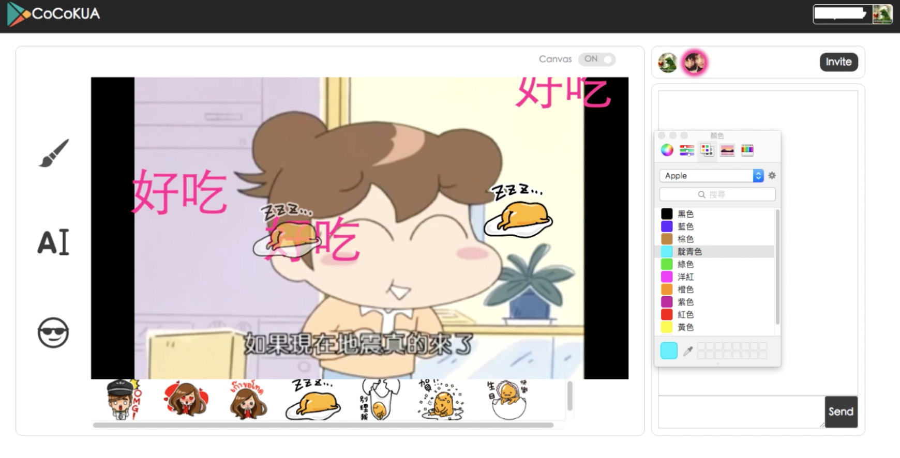

2016-2017, Demo on TAICHI’16
Website: https://letsyoutube.herokuapp.com/
In this project, we explore design to support interaction in the distance when people watch videos together.
With the prevalence of live video streaming (i.e., live broadcasting of ongoing events to a large group of audiences), people have increasing opportunities to watch videos online than before, leading to a new opportunity of online social interaction.
The majority of video streaming interfaces (e.g., Youtube, Facebook) enable audiences to add comments in heterogeneous formats such as texts, hyperlinks and images, which are usually placed under or beside the player.
Some platforms afford time-anchored commenting, allowing users to anchor comments to the video according to the time that they were generated.
Learning from previous research, it’s becoming clearer that real-time interactions can enhance people’s video watching experience by increasing the perceptions of togetherness and responsiveness.
However, distance video watchers still can’t quickly share their idea by pointing on the screen while speaking to others just like what they can do in face-to-face, co-located situations. Besides, there are certain intents people cannot communicate with one another using text easily. In face-to-face settings, we might see a person point to the screen and say “Look at that guy!” with a super big motion to express his surprise on a specific character. To do that in the context of social video watching, he might need to type many words (“Hey, look at that guy on the top-left corner!!! He is holding a gun!!!”) to express the same meaning, but his partner might not even have time to read all the words before the reference scene disappeared.
Overall, CoCoKUA is a web-based video player that integrates synchronous video playback, text chat, and real-time on-video annotations.
Synchornized video player
Synchornized on-video annotations
Diverse annotation tools
We first extend the existing design of time-anchored comments into time- and space- anchored comments, that is, allowing users not only to leave comments on a specific playback time but also a specific position of the video. This may people better communicate the subject of a comment. Comments are designed as digital stamps that people can change their color or size and allows multiple stamping.
Besides texts, we also provide digital-ink and stickers. Stickers, powerful emotion and action representation in the messaging context, can help people efficiently express their feeling, and that shows an opportunity to empower people effectively share their feeling on the video content.
CoCoKUA utilizes Pubnub API to implement peer-to-peer YouTube video synchronization as well as the data transfer of annotations and chat messages.
Video annotations are sent as JSON object including the information of their on-frame positions, which will be processed on each client side and showed on the HTML5 canvas covering over the video. The annotations will be erased automatically in 2 seconds, but continuous click on the canvas will reset the timer. In this way, users are allowed to annotate wherever they want on the video frame without pausing the video, which fulfill the real-time on-video interaction utility.
We conducted a lab-based experiment with 34 people, 15 females and 19 males, age ranged from 15 to 30 years old. Participants were divided into 13 groups. The number of people within a group ranged from 2 to 5, with 7 combinations acquainted with each other and 6 combinations consisted with strangers.
During the experiment, each group watched two 15 - 20 minutes videos chosen from 4 types: Educational Ted videos, Cartoons, Entertainment TV shows, and NBA sports games, depending on their preferences.
All the participants used computers in the lab with seen recording during the test. The headset was used for listening the audio track and participants were arranged to different seats so they couldn’t hear or see each other.
First, participants were taught to be familiar with the tool. Then, they freely watched two videos and interacted with each other using CoCoCUA. After finished two videos, they were asked to fill in a web-based questionnaire and were interviewed afterward. The questionnaire consists of two parts: the former experiences of watching videos together and the feeling after they watched two videos using CoCoKUA. For understanding their former experiences, the questionnaire asked questions about what platform they use, what kinds of videos they watch, and how did they feel in three situations: watching singly, watching a video with others in the same place, and watching together on online platforms. To measure the experience they use CoCoKUA, participants are asked to rate for the aggregate feeling and their favor to the interactive functions provided in our system. They are asked to rate on 5 point scale (1: completely not like; 5: like very much).
About our participants’ prior experience:
How did people utilize CoCoKUA?
Experience in using CoCoKUA: